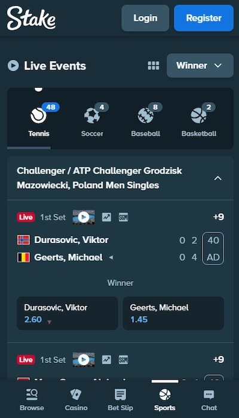
Point 1 — Live markets one tap from the sports tab
Live counters on the sport chips (Tennis 48, Soccer 4, Baseball 8) and the score sitting inside the same card as the price.
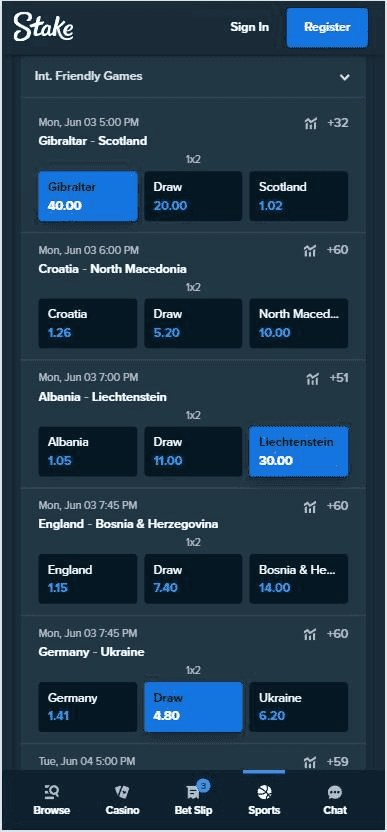
Point 2 — Primary market shown inline in list view
Four matches per screen, each with the full 1x2 row already priced, plus a +60 chip for deeper markets.
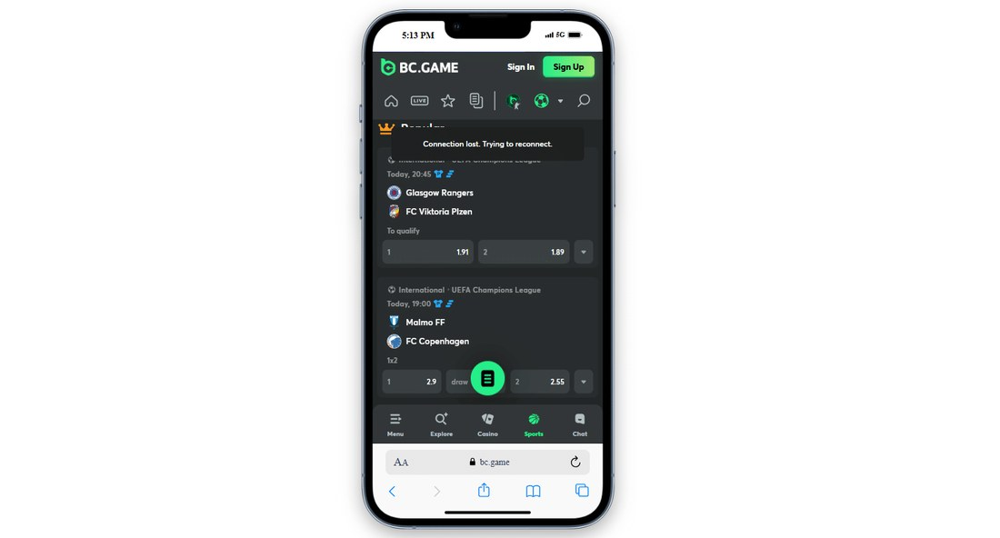
Point 3 — Betslip button inside the odds row
The green slip button sits between the market selectors, so opening the slip costs no scrolling.
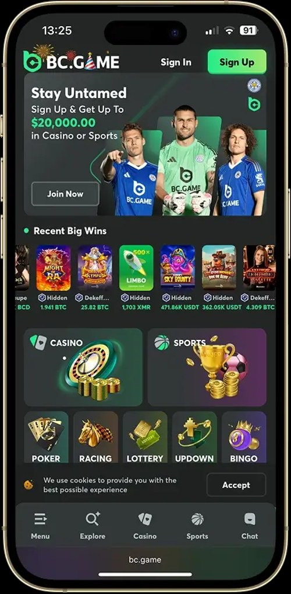
Point 4 — Social proof above the fold
Welcome offer as a single number, then a Recent Big Wins rail with real handles and coin amounts.
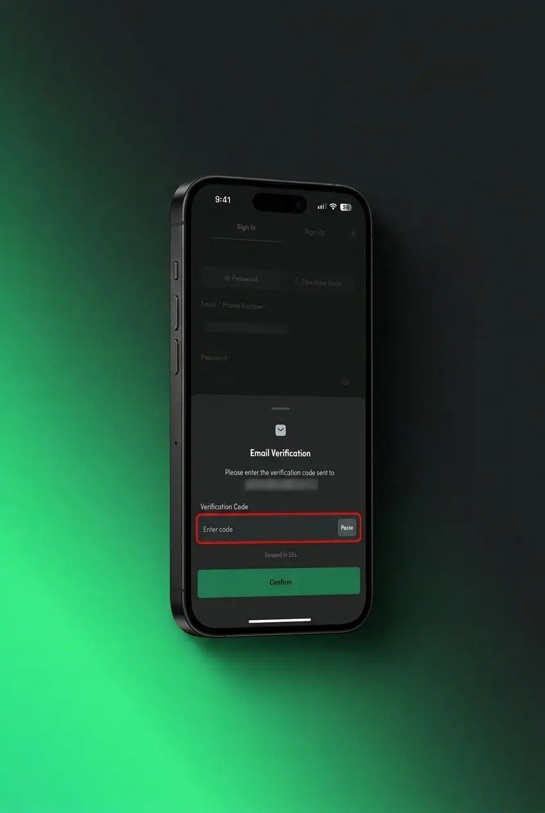
Point 5 — Verification with Paste and a resend countdown
Masked destination address, a Paste affordance on the code field and “Resend in 55s”.
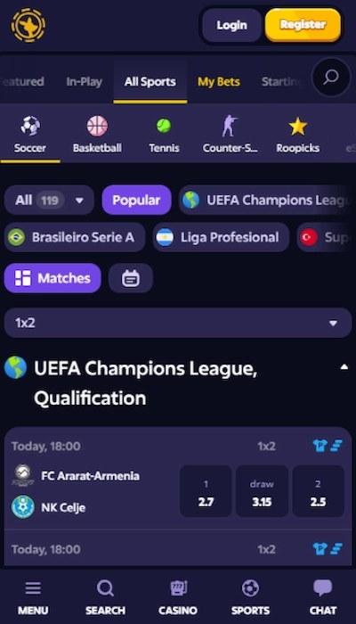
Point 6 — My Bets as a first-class sports tab
My Bets sits in the top-level nav beside All Sports, and “All 119” exposes catalogue depth.
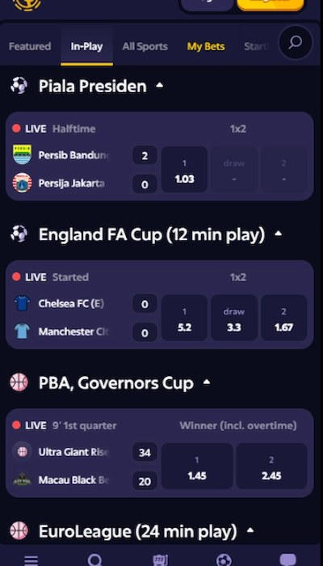
Point 7 — In-play list with a per-sport state line
Halftime / 9' 1st quarter / 24 min play beside each league, with the market named above every price.
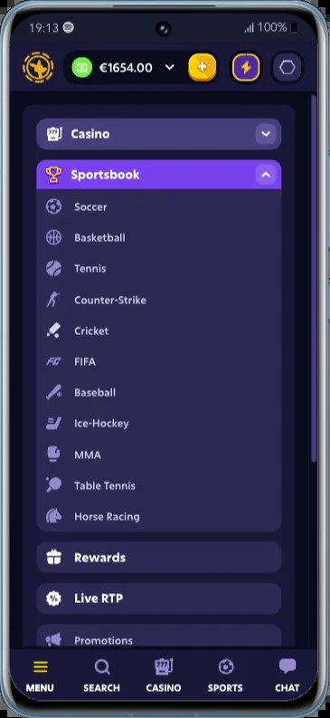
Point 8 — Rewards, Live RTP and Promotions in the menu
Three standalone entries in the drawer, so claiming rakeback is one tap from anywhere.
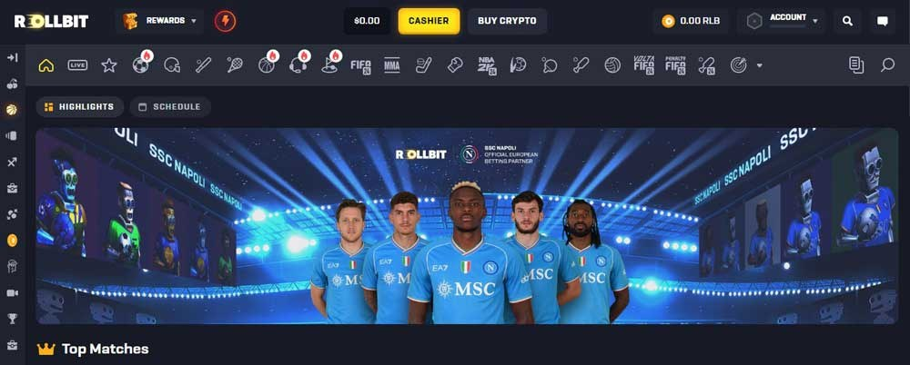
Point 9 — Two filters, uniform tiles, a slip that never unmounts
Only Provider and Sort as controls; a collapsed betslip pill stays on screen the whole time.
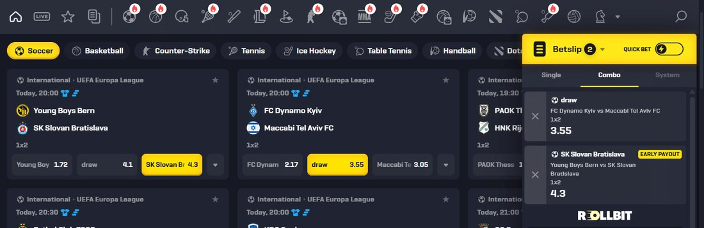
Point 10 — Single / Combo / System tabs plus Quick Bet
Three explicit slip tabs, a leg counter in the top bar and an EARLY PAYOUT badge on one leg.
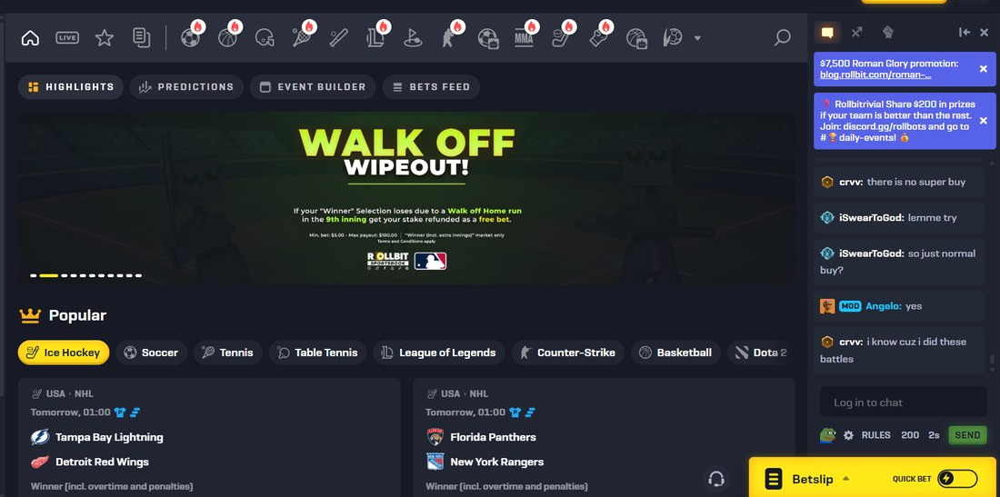
Point 11 — The promo explains its own trigger
Trigger condition, min bet and max payout printed in the banner, with a mod answering questions in the chat rail.
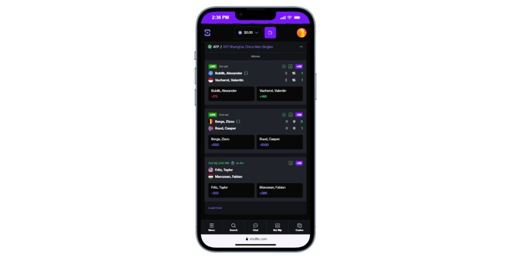
Point 12 — Priced slip from the list in three taps
Score, market tag and two-way price on one row; Bet Slip stays a permanent bottom-bar destination.
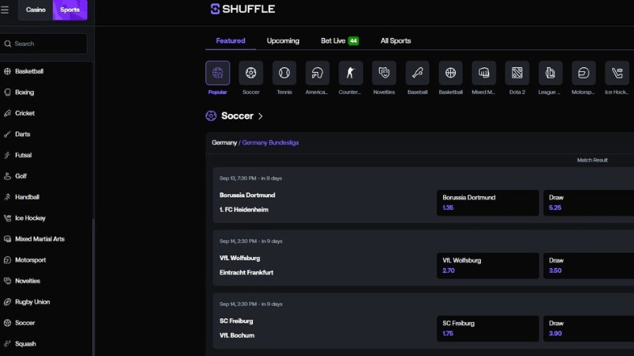
Point 13 — Alphabetised rail, search, live count in the tab
Bet Live (66) puts liquidity into the tab label; fixtures are grouped by league with countdowns.
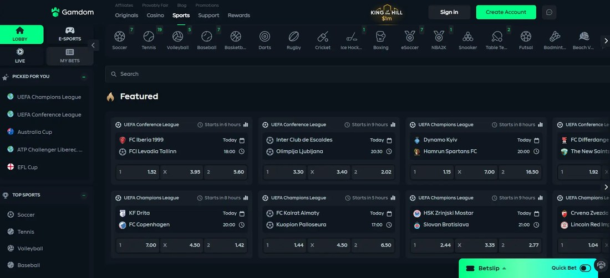
Point 14 — Liquidity counts on every sport icon
A count on each sport (Soccer 7, Tennis 19, Volleyball 5) plus a pinned Quick Bet pill.
Point 15 — Rewards labelled by cadence
Instant / Weekly / Monthly cards, one action each, with the trust line sitting above the claim buttons.
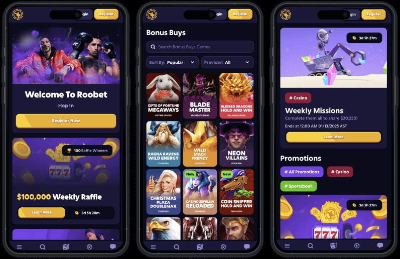
Point 16 — The raffle page reads like a spec sheet
Pool, entry rate with progress bar, winner count, eligibility and automatic entry on one card.